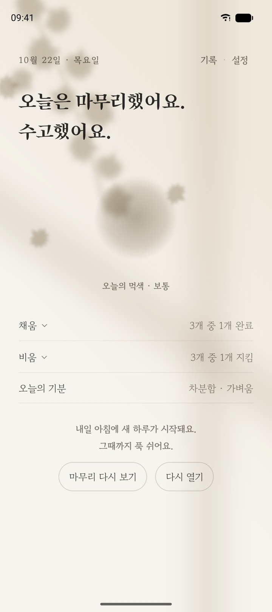
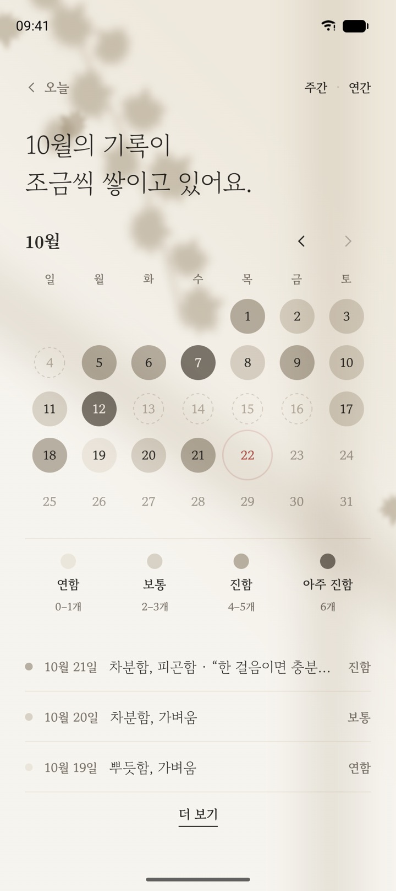
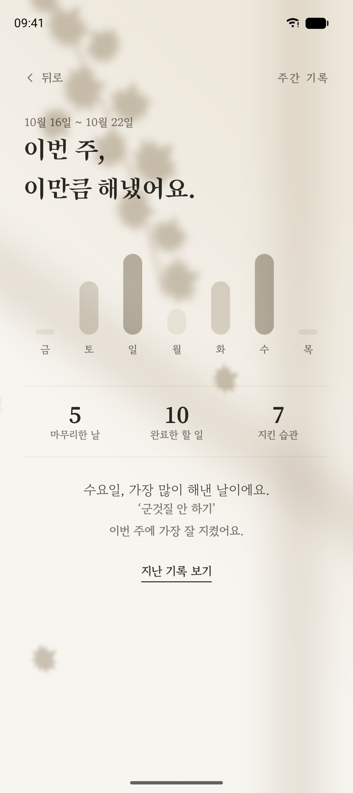
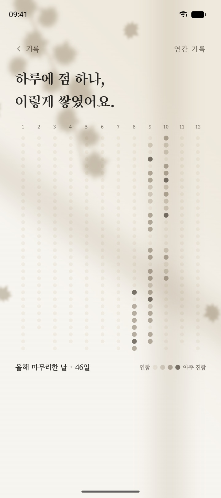
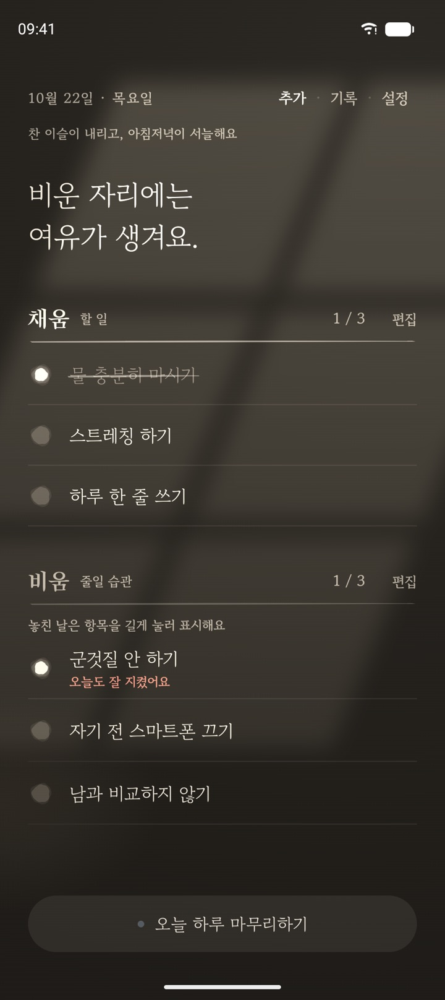
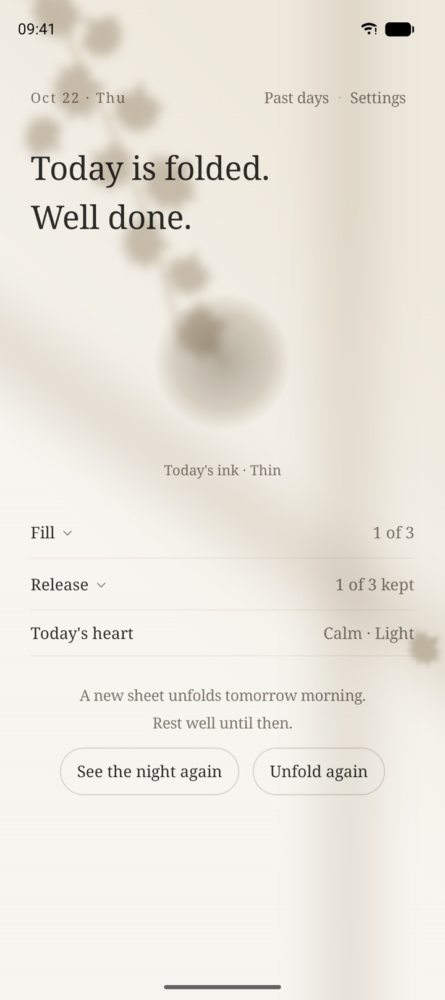
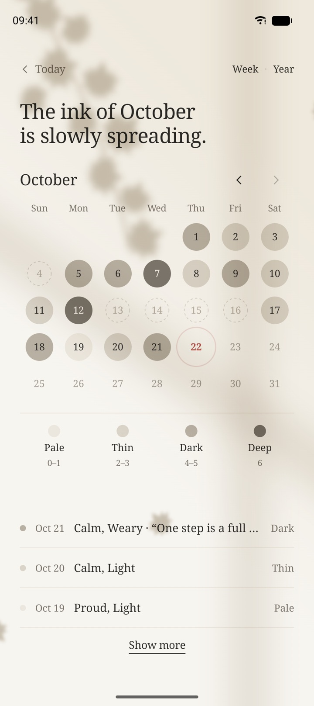
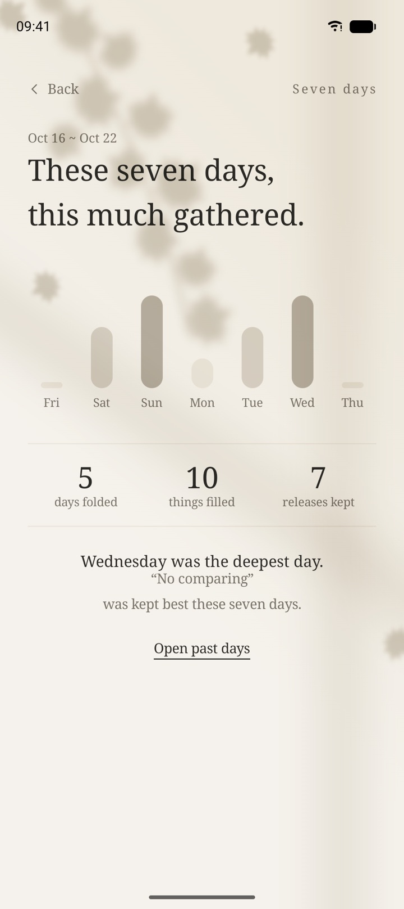
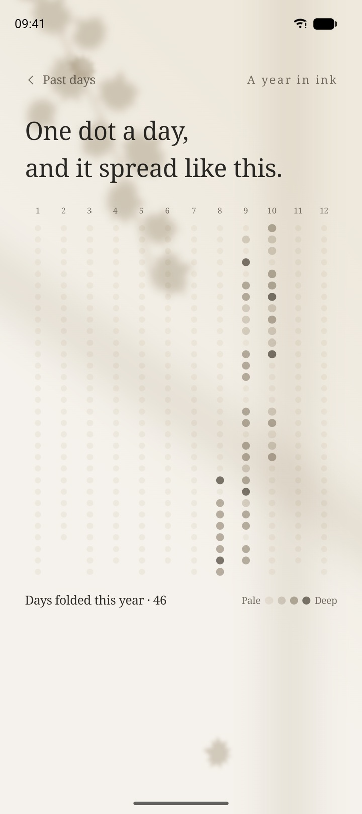
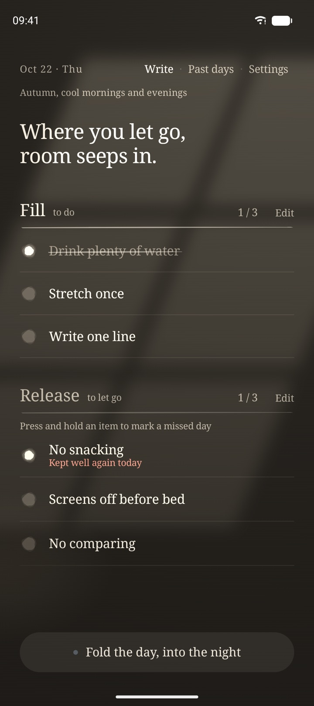

01 · 채움 · 비움채우고,
채우고,
비우고
오늘 해 볼 작은 일 세 가지와 내려놓고 싶은 습관 세 가지를 적어요.
- 해낸 일을 누르면 동그라미가 먹으로 차오르고 붓질 한 획
- 지킨 습관에는 도장, 놓친 날도 괜찮아요

하루에 ‘할 일’ 세 가지와 ‘줄일 습관’ 세 가지만 적는 조용한 습관 기록 앱이에요. 목록을 길게 늘리지 않아도 괜찮아요. 오늘은 그 정도면 충분해요.
오늘 해 볼 작은 일 세 가지와 내려놓고 싶은 습관 세 가지를 적어요.

밤이 되면 오늘의 기분을 고르고, 쓰고 싶을 때만 한 줄 메모를 남겨요. 많이 해낸 날일수록 먹빛이 진해져요.

한 달의 하루하루가 진하고 옅은 먹빛 점으로 남아요.
낮에는 햇빛과 나뭇잎 그림자가 천천히 움직이고, 밤에는 스탠드 조명이 켜져요.
연속 기록이나 순위가 없어요. 놓친 날도 괜찮아요.
아침·저녁 알림은 켜 둘 때만.
늦은 밤 기록도 오늘로 남아요.
회원가입 없이, 기록은 내 기기에.



출시되면 이 페이지에서 바로 받을 수 있어요.
A habit journal that asks for only six lines a day: three things to fill your day with, and three habits to release. No endless lists. That is enough for today.
Write three small, kind things to do and three habits you want to set down today.

At night, pick how the day felt and leave a line only if you wish. The more you kept, the deeper the ink.

Each day of the month stays as a pale or deep dot of ink.
By day, sunlight and leaf shadows drift across the page. By night, a desk lamp turns on.
No streaks, no rankings, no guilt for missed days.
Morning and evening, only when turned on.
Late-night entries still count for today.
No sign-up. Your records stay with you.



Once it launches, you can download it right from this page.
一日に「やること」3つと「減らす習慣」3つだけを書く、静かな習慣記録アプリです。リストを長くしなくても大丈夫。今日はそれで十分です。
今日やってみる小さなこと3つと、手放したい習慣3つを書きます。
夜になったら今日の気分を選び、書きたいときだけ一行メモを残します。たくさんできた日ほど墨色が濃くなります。
ひと月の一日一日が、濃く淡い墨色の点として残ります。
昼は日ざしと木の葉の影がゆっくり動き、夜はスタンドの明かりが灯ります。
連続記録もランキングもありません。
朝と夜の通知はオンにしたときだけ。
夜ふかしの記録も今日の分に。
会員登録なし。記録はあなたの端末に。
画面は英語版のものです。
公開されたら、このページからすぐにダウンロードできます。